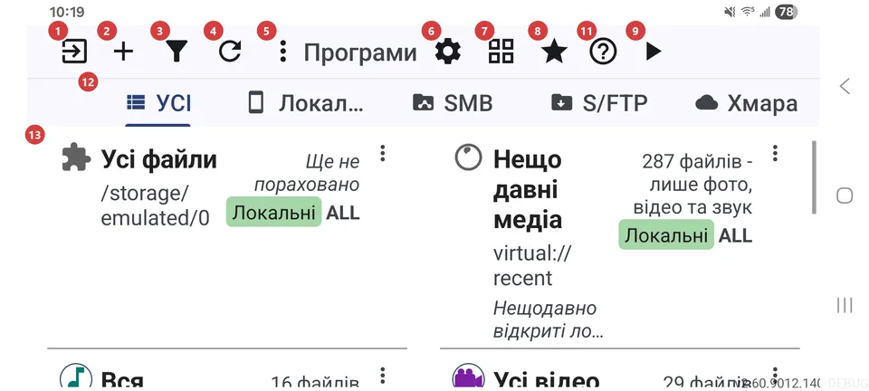
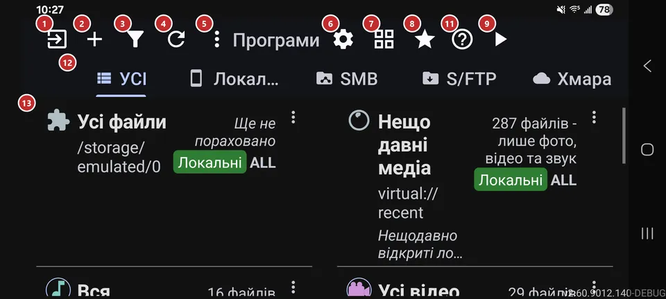

Список ресурсів
Для чого цей екран
У списку ресурсів зібрано ваші ресурси - папки на пристрої, мережеві папки та хмарні сховища, які ви додали. Додайте ресурс, відкрийте його й переглядайте файли або одразу запустіть відтворення.


Порядок дій
- Натисніть «Додати» 2 і підключіть перший ресурс: папку на пристрої, мережеву папку або хмару. Поки ресурсів немає, список порожній.
- Якщо ви користуєтеся мережевими чи хмарними ресурсами, оберіть потрібний тип на вкладках 12. Вкладки з’являються, щойно ввімкнено хоча б одне віддалене джерело.
- Натисніть рядок у списку 13, щоб відкрити файли ресурсу в браузері файлів. Значок рядка одразу запускає показ.
- «Фільтр» 3 допоможе відсортувати список або залишити лише потрібне. «Оновити» 4 стане в пригоді, коли файли змінилися поза застосунком.
- Кнопка 7 перемикає вигляд - список, сітка чи таблиця, - щоб на екрані вміщалося більше або менше ресурсів.
- «Запустити плеєр» 9 пропускає перегляд і запускає вибраний або останній ресурс, а «Обране» 8 відкриває все, що ви позначили.
- У «Налаштуваннях» 6 змінюється поведінка застосунку, «Довідка» 11 відкриває цю сторінку, а «Вийти» 1 закриває застосунок.
Елементи
Панель команд
1ВийтиЗакриває застосунок або згортає його, поки щось працює у фоні.
Якщо грає музика, триває запис, виконуються операції за розкладом або ввімкнено крайові жести, одне натискання лише згортає застосунок, щоб усе це тривало, а значок змінюється. Коли у фоні нічого немає, одне натискання закриває застосунок. Довге натискання завжди закриває все, зокрема фонові функції.
2ДодатиВідкриває екран додавання нового ресурсу.
Ресурс - це місце, де лежать ваші файли: папка на пристрої, мережева папка або хмара. Після збереження він з’явиться в списку, і його можна відкрити. Натискання на порожній список робить те саме.
3ФільтрСортує список ресурсів і звужує його.
Оберіть порядок (вручну, за іменем, за датою або за кількістю файлів), а тоді обмежте список за типом ресурсу, типом медіа чи частиною імені. Галочка застосовує вибір, кнопка скидання фільтрів скасовує його. Поки фільтр увімкнено, унизу списку видно, який саме.
4ОновитиЗаново перевіряє всі ресурси на нові та змінені файли.
Натисніть, коли скопіювали файли з іншого застосунку чи з комп’ютера, або якщо мережева папка була недоступна. Заодно скидаються мережеві підключення, а відео, для яких раніше не вдалося створити прев’ю, отримують ще одну спробу.
5ЩеВідкриває меню з діями, яких немає на панелі.
Кнопка з’являється, лише коли в меню щось є: програми (якщо панель програм вимкнено), кнопки, що не вмістилися на вузькому екрані, та «Довідка». На малому екрані нічого не зникає - кнопки переїжджають сюди.
6НалаштуванняВідкриває налаштування застосунку - чотири вкладки.
Вкладки: «Загальні», «Медіа», «Плеєр» і «Управління». Почніть із «Загальних»: там мова, тема й профіль пристрою. Якщо не знаєте, де шукати параметр, у налаштуваннях є пошук.
7Сітка / списокПеремикає вигляд ресурсів: список, сітка або таблиця.
Значок показує вигляд, який ввімкнеться наступним, а вибір запам’ятовується. Таблиці потрібне широке вікно - планшет, режим робочого стола чи великий розкладений екран: у ній є стовпці з іменем, джерелом, файлами, вмістом і шляхом та панель відомостей. У вузькому вікні вигляд перемикається між списком і сіткою.
8ОбранеВідкриває все, що ви позначили обраним, в одному місці.
Відкривається «Обране» в браузері файлів. Кнопка видима, коли «Обране» ввімкнено в налаштуваннях; файли ви позначаєте під час перегляду.
9Запустити плеєрЗапускає відтворення ресурсу, не відкриваючи браузер файлів.
Грає вибраний ресурс. Якщо нічого не вибрано, береться той, що ви відкривали востаннє, а якщо й такого немає - перший у списку. Поки список порожній, кнопка неактивна.
10Пошук ресурсівШукає ресурс за іменем або шляхом у таблиці.
Поле видно лише за ввімкненої таблиці. Введіть кілька літер, і рядки звужуються просто під час введення. Очистьте поле, щоб повернути весь список.
11ДовідкаВідкриває довідку про цей екран.
Ви дізнаєтеся, що робить кожна кнопка і в якому порядку нею зазвичай користуються; номери збігаються з позначками на знімку екрана.
Ресурси
12Фільтр типів ресурсівПоказують лише ресурси одного типу.
«УСІ» показує все, а «Локальні», SMB, S/FTP і «Хмара» залишають лише свій тип. Вкладка є тільки для ввімкненого джерела, а вся смуга прихована, доки не ввімкнено хоча б одне мережеве чи хмарне джерело: інакше «Локальні» не відрізнялися б від «УСІ». Довге натискання на вкладку згортає смугу в невелику плашку, а натискання на плашку повертає її.
13РесурсиВаші ресурси: один рядок або плитка на кожен.
Натисніть рядок, щоб відкрити файли в браузері файлів. Значок рядка запускає показ, а довге натискання відкриває редагування ресурсу. У кожного рядка є кнопки: змінити, скопіювати налаштування, перемістити вгору чи вниз, видалити та «Ще».
- Скасування
- Перед видаленням ресурсу застосунок запитає підтвердження, потім прибере ресурс зі списку й скасує операції за розкладом, які його використовують. Файли залишаться на місці, а ресурс можна додати знову.